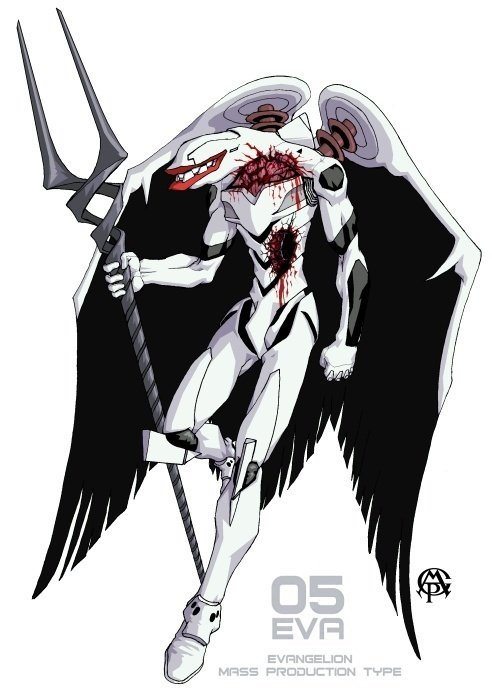
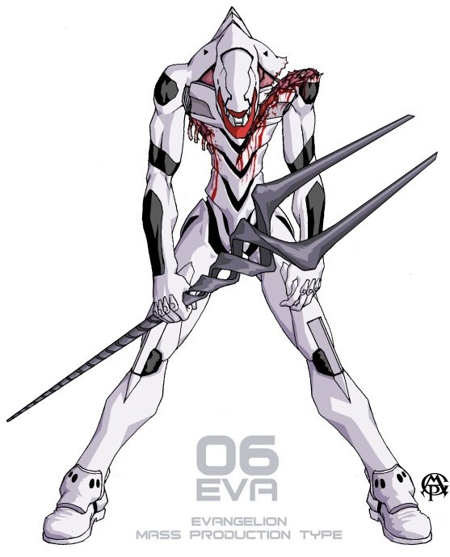
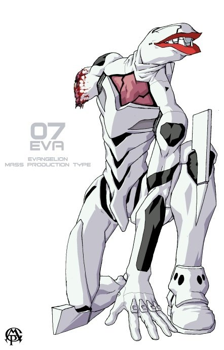
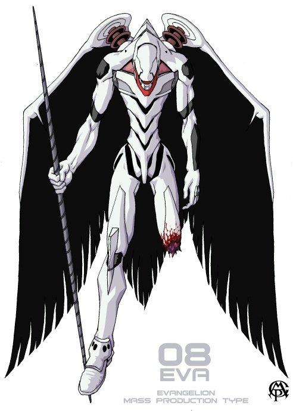
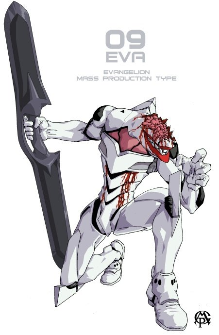
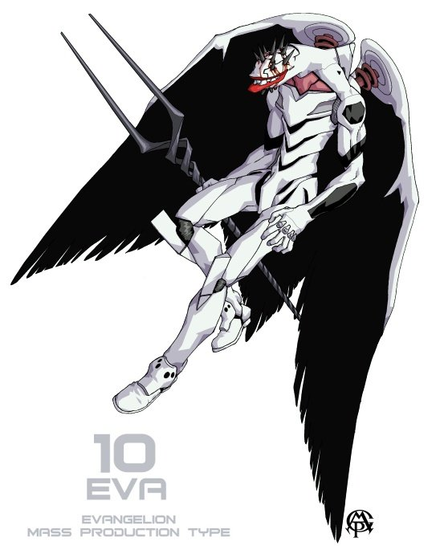
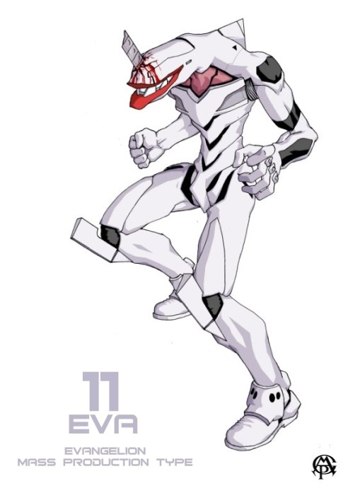
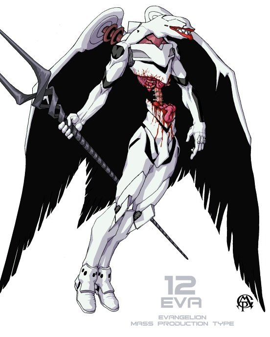
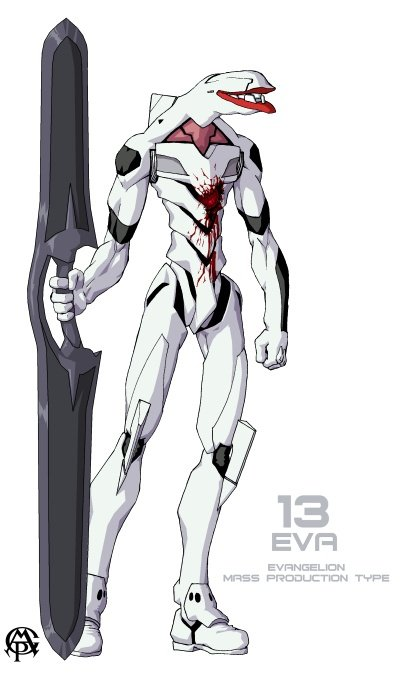

本ページは、
主がHTML、CSS、JavaScriptの復習のため、半分学習、半分趣味で作ったページです。
プログラミングを学び始めて1週間くらいなので、クオリティもそんな感じです。
内容は、
『新世紀エヴァンゲリオン』におけるEVAシリーズの機体情報を要約したものです。
【零号機（EVA-00 PROTO TYPE）】
山吹色のプロトタイプ（試作機）。
【零号機（改）】
ウェポンラックが追加装備され、機体カラーも青に変更された。
■パイロットの特徴
- 青い髪
- 赤い瞳
- かわいい
- 凛々しい
- 麗しい
- 洗練されている
【初号機（EVA-01 TEST TYPE）】
紫色のテストタイプ（試験機）。
リリスより制作された唯一の機体。
■パイロットのコメント
綾波の匂いがする。ｸﾝｶｸﾝｶ
【弐号機（EVA-02 PRODACTION MODEL）】
赤色の先行量産機。
【参号機（EVA-03 PRODACTION MODEL）】
黒色の正規実用型。米国NERF第1支部製。
【四号機（EVA-04 PRODACTION MODEL）】
銀色のS²機関搭載試験機。米国NERF第2支部製。
【量産機（EVA-05～13 MASS PRODACTION MODEL）】
白色の量産型機。通称EVAシリーズ。
S²機関搭載により活動限界を克服している。
5号機から13号機までの全9機が実戦投入された。

5号機

6号機

7号機

8号機

9号機

10号機

11号機

12号機

13号機
【Let's try!】あなたの性質にあった機体は？
【お問い合わせフォーム】
お名前
メッセージ